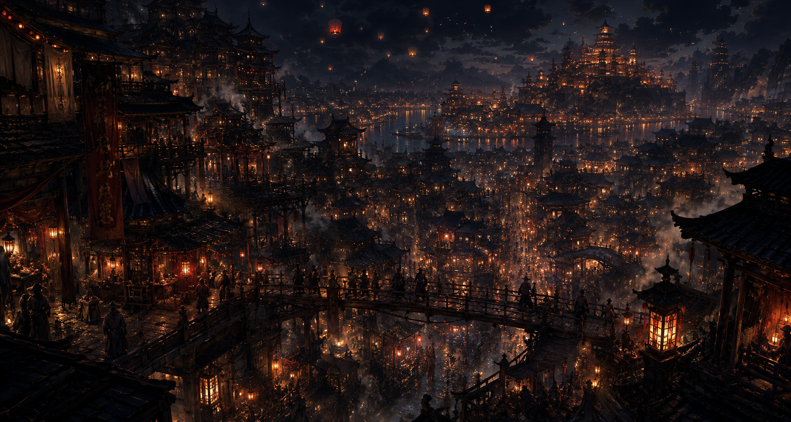
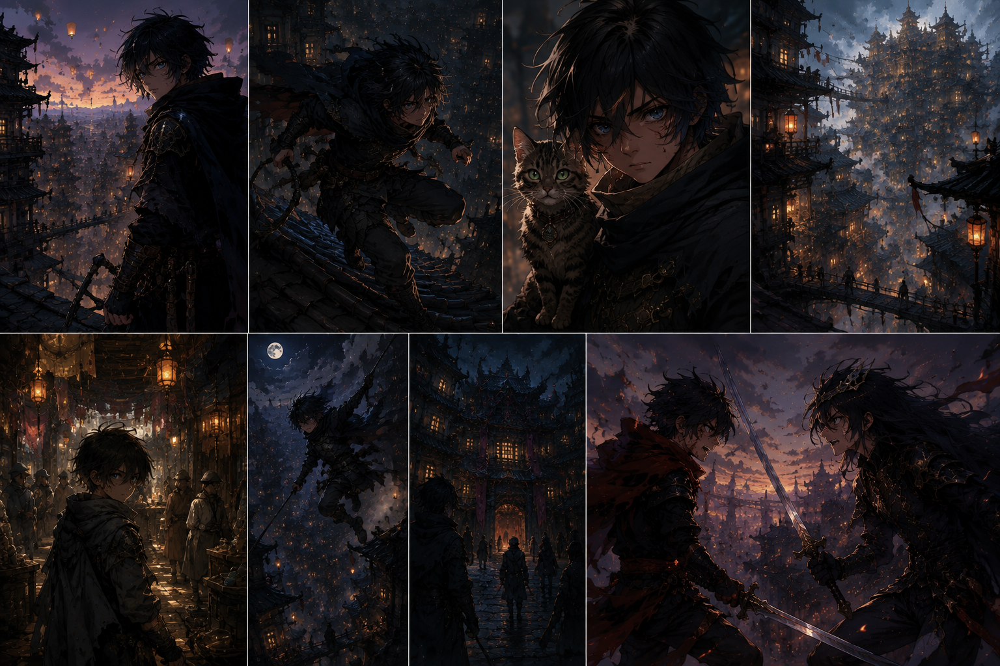
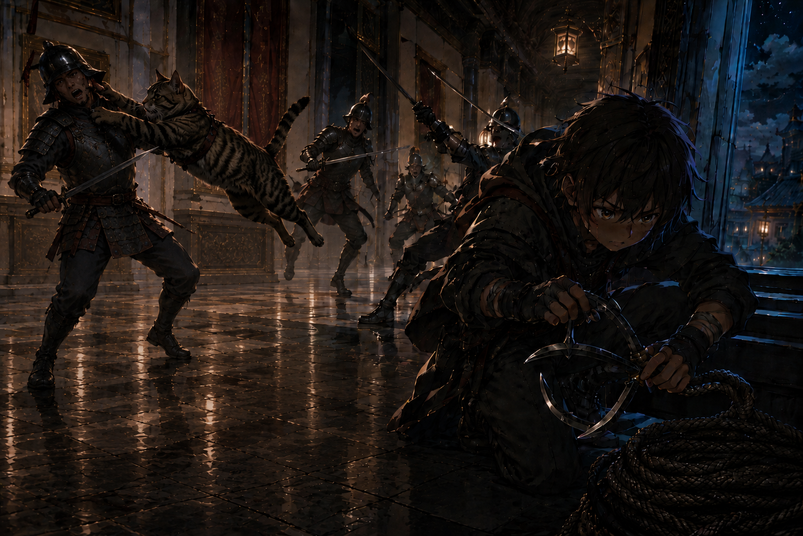
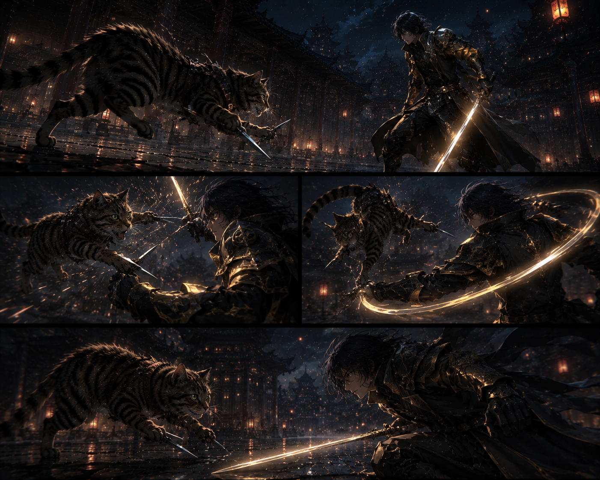

Les enfants de Tyrih
Une cité pauvre, vivante, pleine de chants, de fumée et de loyautés mouvantes. Raiu vole de toit en toit, porté par son désir d’être reconnu.
Dans les hauteurs de Tyrih, un enfant des rues croyait encore que les lanternes indiquaient une sortie. Cette nuit-là, le ciel lui répondit autrement.
Les ruelles sentent la fumée, le métal humide, les épices bon marché et parfois le sang séché après les nuits trop agitées. Les maisons s’empilent comme si la ville entière essayait d’empêcher ses habitants de tomber dans le vide.
Pourtant, Tyrih demeure vivante. Les enfants rient encore sur les marchés. Les vieillards jouent aux dés sous des lampions usés. Et lorsque les lanternes célestes montent au-dessus des quartiers pauvres, même les plus misérables lèvent parfois les yeux.


Il n’a que douze ans. Il court trop vite, parle parfois trop fort, ment mal quand il est fier, et se croit plus invisible qu’il ne l’est vraiment. La Guilde l’a recueilli, nourri, formé, mais elle ne l’a pas sauvé de sa faim d’exister.
Cette nuit de Nouvel An, Raiu ne cherche pas seulement à voler une broche. Il cherche un regard. Celui de Seran. Celui de la Guilde. Peut-être celui du monde entier, même s’il ne saurait pas encore le dire ainsi.
Petit, tigré, nerveux, animal. Il ne ressemble pas à un vieux maître humanoïde déguisé en félin. Il bondit, griffe, mord, disparaît entre deux respirations, et transforme sa taille ridicule en avantage brutal.
Pour Raiu, Seran est plus qu’un mentor. C’est une preuve vivante qu’un corps minuscule peut défier un monde immense, tant qu’il sait lire l’espace avant les autres.

Le chapitre doit d’abord sentir l’aventure, puis la tension, puis la cassure. Raiu croit encore évoluer dans un monde à sa taille. Yuka arrive pour lui prouver que le continent est beaucoup plus ancien que ses toits.
Une cité pauvre, vivante, pleine de chants, de fumée et de loyautés mouvantes. Raiu vole de toit en toit, porté par son désir d’être reconnu.
Seran entraîne Raiu vers une résidence impériale. La broche ancienne, les runes, le chi et le cerf-volant font basculer le simple larcin vers le monde profond.
Une silhouette apparaît. Le silence change. Le cerf-volant se déchire dans la lumière, et Raiu découvre pour la première fois qu’il existe des êtres au-dessus de son ciel.
Le cerf-volant était encore une chose d’enfant : une ruse de voleur, une promesse de fuite, un morceau de ciel domestiqué. Lorsque la lumière le traverse, Raiu ne perd pas seulement de l’altitude. Il perd l’échelle du monde.
À partir de cet instant, Tyrih ne suffit plus. Les Lumirunes, l’Empire, Faranfela, les pactes et les mémoires anciennes commencent à peser sur l’histoire.
Ces images servent à cadrer la sensation du récit sans tout figer. Certaines appartiennent à la narration principale, d’autres restent des fragments de laboratoire visuel.

Le site ne doit pas vendre une fantasy générique. Il doit garder une matière : cuir usé, pierre mouillée, lanternes, fumée, regards trop jeunes, violence trop propre.
Les images les plus narratives sont celles qui ouvrent une tension : Raiu au-dessus de Tyrih, Seran dans le manoir, puis la chute. Le reste demeure une réserve d’atmosphère.
Remonter aux lanternes